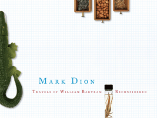

<body bgcolor="#FFFFFF" text="#000000" link="#0000FF" vlink="#CC0000" alink="#CC0000"><center><hr width="350" size="1" align="center" noshade>Following the contemporary path of a historic naturalist<hr width="350" size="1" align="center" noshade><p><a href="https://cdcshoppingcart.uchicago.edu/Cart/ChicagoBook.aspx?ISBN=9780615257488&&PRESS=temple" target="_top">Buy this book!</a> | <a href="https://cdcshoppingcart.uchicago.edu/Cart/Cart.aspx?PRESS=temple" target="_top">View Cart</a> | <a href="https://cdcshoppingcart.uchicago.edu/Cart/Cart.aspx?PRESS=temple" target="_top">Check Out</a></p><p></p></center><!--none//--><h1>Travels of William Bartram Reconsidered</h1>
<H2>John Bartram Association</H2>
<h3>Mark Dion</h3>
<P>cloth 0615257488 $35.00, Jan 10, <FONT COLOR=#990033>Available</FONT>
<BR> 112 pp
8.5x12
</P><p>Combining humor and seriousness, this picture-filled book beautifully documents an artistic collaboration across more than two centuries. The 18th-century naturalist/artist William Bartram is renowned for his <em>Travels</em>, a volume recounting his 1770s trip through the American Southeast and for his revelatory drawings.
</p><p>
Mark Dion is a contemporary artist famous for working with historical and museum collections, and for site-specific displays that mimic the historical exhibits surrounding them. Commissioned for the landmark John Bartram house at Philadelphia’s Bartram’s Garden, the &quot;Travels Reconsidered&quot; exhibition and Dion’s 21st-century journey that produced it are evoked in <em>Travels of William Bartram - Reconsidered</em>, a book filled with copious photographs, drawings, and texts.
</p><p>
Essays by the organizing art curator and an art critic; the first history of Bartram’s Garden published in 50 years, by its Resident Bartram Scholar; and excerpts from Mark Dion’s travel diary and reproductions of letters and texts about the project and its people make this book a treasure trove of exploration that encompasses different times, spaces, and ideas of natural history and art.
</p>
<P>Distributed by Temple University Press for The John Bartram Association</P>
<BR>&nbsp;<H2>About the Author(s)</H2>
<P><b>Mark Dion</b> is an American artist whose works have appeared in such museums as the Museum of Modern Art in New York, the Tate in London, and the Carnegie Museum of Art in Pittsburgh, and been featured in the PBS series <em>Art 21</em>. Dion has been an artist-in-residence at the Museum of Natural History in London. His work examines the ways in which dominant ideologies and public institutions shape our understanding of history, knowledge, and the natural world. Appropriating various scientific methods of collecting, ordering, and exhibiting objects, Dion creates works that question the distinctions between ‘objective’ (‘rational’) scientific methods and ‘subjective’ (‘irrational’) influences.</P>
<BR><H2>Subject Categories</H2>
<p><A HREF="/tempress/philly.html" TARGET="_top">Philadelphia Region</a>
<BR><A HREF="/tempress/nature.html" TARGET="_top">Nature and the Environment</a>
<BR><A HREF="/tempress/history.html" TARGET="_top">History</a>
</p>
<p align="center"><a href="https://cdcshoppingcart.uchicago.edu/Cart/ChicagoBook.aspx?ISBN=9780615257488&&PRESS=temple" target="_top">Buy this book!</a> | <a href="https://cdcshoppingcart.uchicago.edu/Cart/Cart.aspx?PRESS=temple" target="_top">View Cart</a> | <a href="https://cdcshoppingcart.uchicago.edu/Cart/Cart.aspx?PRESS=temple" target="_top">Check Out</a></p><p><font face="Arial" size="1"><a href="copyright.html" onMouseOver="window.status='Web Copyright Policy';return true;" onMouseOut="window.status=''" title="Web Copyright Policy">&copy;</a> 2015 <a href="http://www.temple.edu" target="new" onMouseOver="window.status='Link to Temple University home page';return true;" onMouseOut="window.status=''" title="Link to Temple University home page">Temple University</a>. All Rights Reserved. http://www.temple.edu/tempress/titles/2110_reg.html</font></p>